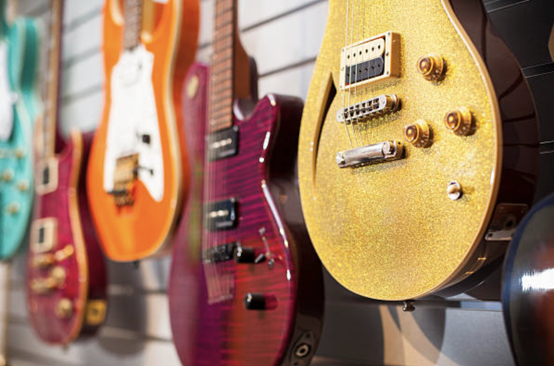

Bonjour à tous, bienvenu sur ce site j'éspère que tu l'apprécieras
Tu as une âme d'artiste ? En tant que musicien je vais te donner quelques supports et tips pour progresser!🎸
Guitar Pro : L'outil du guitariste ! Youtube : Pour écouter ta musique !Le Choix de l'instrument
Dans cette rubrique je vais vous expliquer comment choisir un instrument de départ ou changer de modèle!
Le plus important dans le choix d'un instrument c'est d'avoir vraiment envi de jouer de cet instrument 😍 🎻. Si vous n'avez pas envi de jouer de la guitare mais du piano faites du piano même si faire de la guitare est bien plus cool . Une fois votre premier tri effectué, il est possible qu'il vous reste plusieurs instruments encore en liste 🎺 vs 🎸 vs 🥁. Maintenant il va falloir regarder quel style de musique vous préférez, si vous aimez la musique électronique, il est plus facile de retrouver la même ambiance avec un synthétiseur . Il vous sera difficile d'obtenir un son de type rock ou métal 👨🏼🎤 avec une clarinette naturellement sans ordinateur 💻. je vous conseille donc de favoriser les instruments concordants avec vos styles de musique car en plus d'obtenir un rendu plus fidèle au style d'origine, il est beaucoup plus facile de progresser 📈 quand on aime le son et le titre que l'on joue.
Pour ceux qui ont deja fait leur choix et qui souhaitent se procurer le modèle supérieur, voici de simples conseils très importants ! Tout d'abord demandez de l'aide au vendeur 👨🏽💼, il saura vous conseiller en fonction de votre style de musique de votre niveau, du son recheché 🎤 etc. Ensuite, profitez du moment, on n'achète pas un instrument tous les jours. Testez tous les modèles ecoutez le son, jouez et mettez le feu 👩🏻🚒 dans le magasin et choisissez celui qui vous plait le plus ! Evidemment le visuel rentre en compte, si la guitare sonne super bien mais est moche vous n'aurez jamais envi d'en jouer. Vous êtes à la recheche du coup de foudre ⚡️!
L'importance du solfège ?
Les aspects positifs et négatifs du solfège.
Ce qui est intéressant dans le solfège c'est de comprendre ce que l'on joue 🤯, contrairement à ce que vous pouvez penser il est totalement possible de jouer sans solfège. Que ce soit à l'oreille 👂🏻 avec des tutos ou tablatures. Je vous conseille donc de commencer l'instrument en parallèle du solfège car sinon il est compliqué de rester motivé 💪🏻. Pour cela il existe des écoles de musique 🏫 qui vous font commencer à jouer dès la première année et c'est vraiment sympa. Généralement le solfège est utile pour les musiciens qui jouent du classique ou pour ceux souhaitant aller un peu plus loin 🤠. C'est en quelque sorte une langue qui vous permettra de composer. On parle de composition musicale complexe avec d'autres accords que DO, Mi et SOL 🎼. L'Intêret est de comprendre la composition de ses accords et pourquoi ils vont bien ensemble. Cela permet également de décomposer les rytmiques 🪘 et de développer une certaine rigueur. Plus simplement cela permet de mettre sur papier vos inspirations les plus folles pour pouvoir les partager 🤝 !

Rejoindre un Groupe
Le pourquoi du comment rejoindre un groupe de musiciens pour s'amuser davantage.
L'intérêt de partager sa passion avec un groupe est de pouvoir progresser tous ensemble. C'est en travaillant en parallèle tous ensemble et en se donnant des conseils réciproques que la progression se fait la plus rapide. Voici une lieste non exhausive de tout ce que vous allez pouvoir apprendre en groupe :
- Découvrir de nouveaux morceaux 👩🏾🎤
- jouer à plusieurs puis faire des concerts🧍🏻♂️🧍🏿🧍🧍🏻
- s'adapter quand il y a une erreur 😎
- improviser tous ensemble 👏🏼
- rigoler davantage 😆
- pouvoir tester plein d'instruments 🪗
Jouer en public
Quelques tips pour éviter les fausses notes mais surtout le stress de la présentation
pour commencer sache que jouer en public est super enrichissant . cela te permet de te surpasser 👑 et de partager avec d'autres ta passion. Quand on parle de jouer en public nous parlons évidemment de scènes ou de concerts mais aussi de morceaux face à ses amis ou sa famille 👨👩👦👦. Qui que soit la personne en face de vous tant que vous n'êtes pas seul dans votre chambre vous êtes en public ! Voici les best practices à mettre en place pour évacuer le stress 🧘🏻:
- Préparer un max ! Plus vous êtes préparés moins vous risquez de faire une fausse note 🎶
- S'entrainer avec son groupe 🤜🏼🤛🏻, si vous êtes chanteur et que vous oubliez les paroles pas de stress, si le groupe se connait bien, on attend un nouveau cycle, on lance un solo improvisé mais en aucun cas on ne s'arrète 🛑 !
- Vous pouvez réécouter 🎧 le morceau juste avant pour vous le remémorer
- Ne jamais abandonner, c'est parce qu'on a raté un premier concert que le deuxième est meilleur et que vous deviendre un ou une showman, coupez et recommencez !🎬
- Se mettre dans sa bulle 💭 avant de monter sur scène, chacun développe sa propre technique mais se concentrer avant une prestation en public pour se refocaliser n'a jamais fait de mal à personne
- Vous pouvez boire une tisane 🍵 ou allez en pharmacie, il y a de nombreux produits naturels qui aident à se détendre
Quoi qu'il arrrive n'oubliez jamais que de faire une fausse note ça arrive a tout le monde, donnez simplement le meilleur de vous même et profitez du moment 😁. Vous allez vous créer de super souvenirs et si quelqu'un rate une note 🎵ce ne sera qu'un souvenir à partager avec votre groupe !
Des outils et conseils pour t'aider à progresser
Outre les outils tels que Guitare Pro et Youtube, il existe une infinité d'apps et site qui sont supper utiles pour progresser ou élargir ses horizons
Amplitube ! Pour avoir toutes les amplis dans ton téléphonePopulélé ! Un ukulélé connecté pour débuterIndiepool ! Pour t'aider en tant que musicien indépendant
Guil's records ! Un site pour t'aider à dévlopper tes projets musicauxWe transfer ! Pour t'aider à conserver et partager tes morcaux
Tiktok ! Pour t'aider à te faire découvrir c'est la plateforme avcele meilleur algorithme